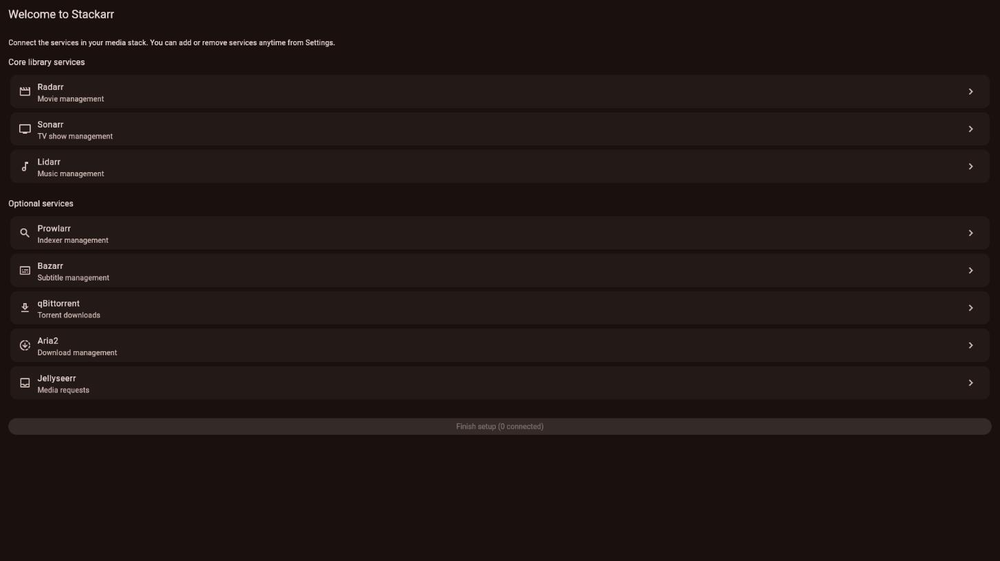
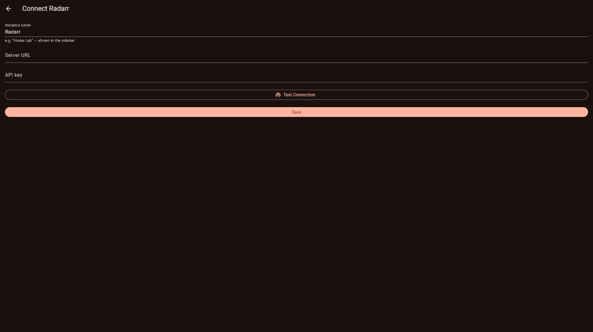
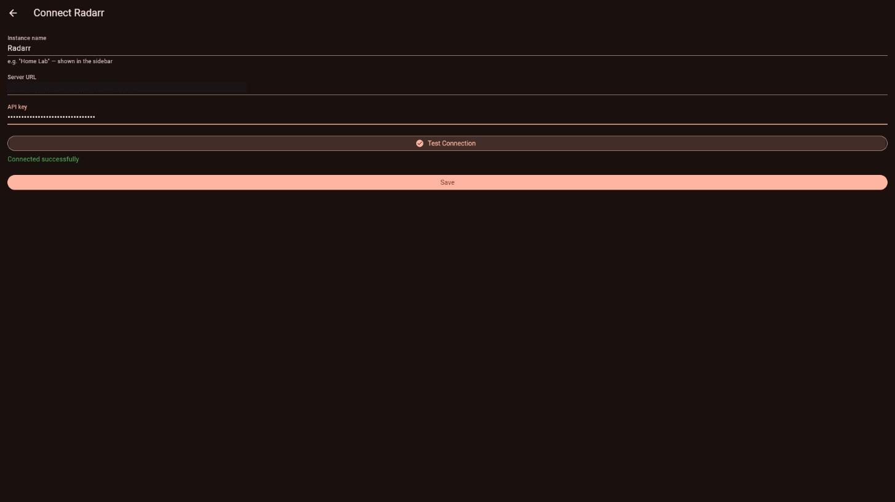
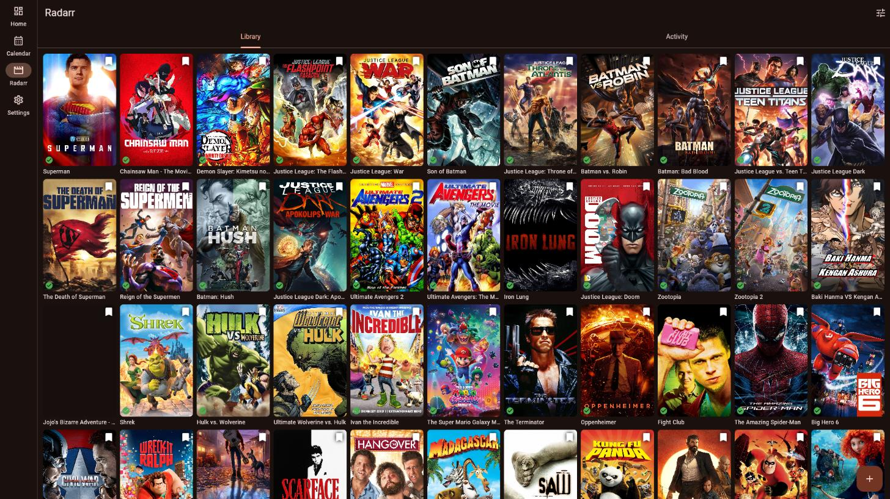
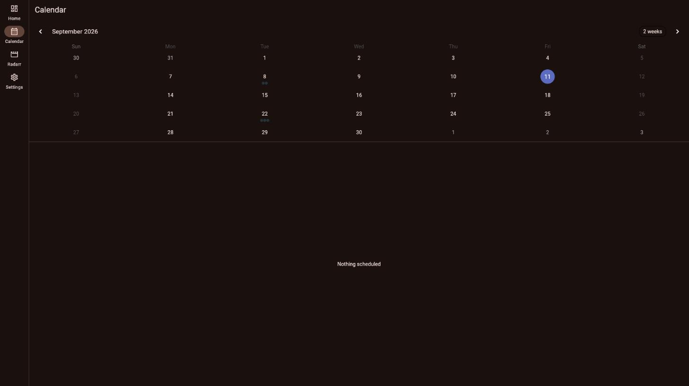

Free & open source · self-hosted media stack client
Stackarr is a native Flutter app that talks directly to your own Radarr, Sonarr, Lidarr, Prowlarr, Bazarr, qBittorrent, Aria2, and Jellyseerr instances — no server, no cloud account, no middleman. Browse, search, request, and manage your entire library from your phone or desktop, with the same control you'd have in each service's own web UI.





What it does
A generic search bar on every library and list screen — movies, shows, artists, indexers, downloads, requests. Type once, filter instantly, no per-service quirks to learn.
Every title opens into a real detail page: poster, overview, genres, ratings, file status. Toggle monitoring, trigger a manual search, or delete — right from the card.
Radarr and Sonarr releases merged into one calendar, so you don't check two apps to see what's landing this week.
Multi-select across your library to monitor, search, or delete in bulk — the tedious stuff the web UIs make you do one row at a time.
View, edit, duplicate, and delete quality profiles without opening a browser tab.
App-level lock screen with PIN or fingerprint/face unlock, so your library stays private even if the phone doesn't.
Supported services
| Service | Purpose | Status |
|---|---|---|
| Radarr | Movie management | Live-verified |
| Sonarr | TV show management | Live-verified |
| Lidarr | Music management | Live-verified |
| Prowlarr | Indexer management | Live-verified |
| Bazarr | Subtitle management | Live-verified |
| qBittorrent | Torrent downloads | Live-verified |
| Jellyseerr | Media requests | Live-verified |
| Aria2 | Download management | Supported, pending live test |
| Overseerr | Media requests | Planned |
| Readarr | Book management | Planned |
Platforms
No account to create, no data leaves your network beyond what you already send your own servers. Point it at your instances and go.